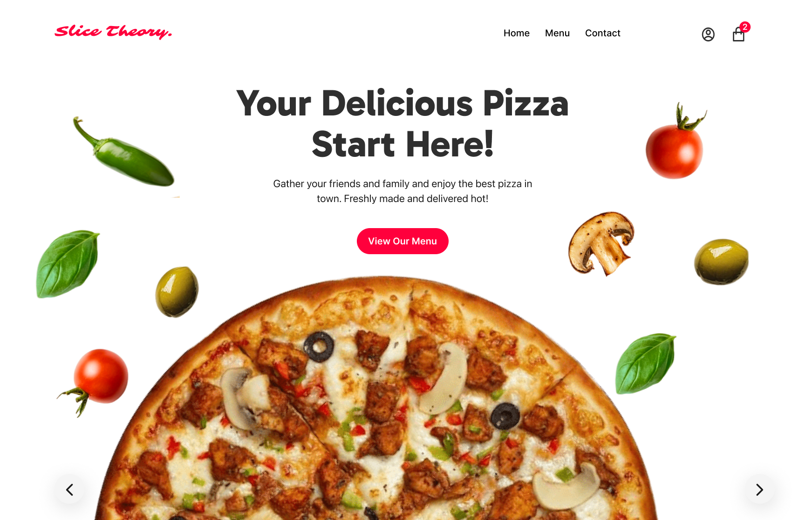
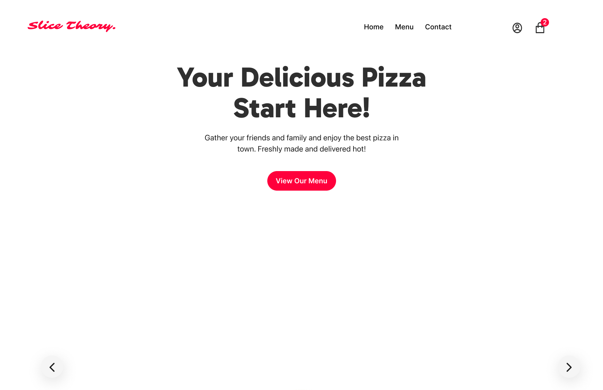
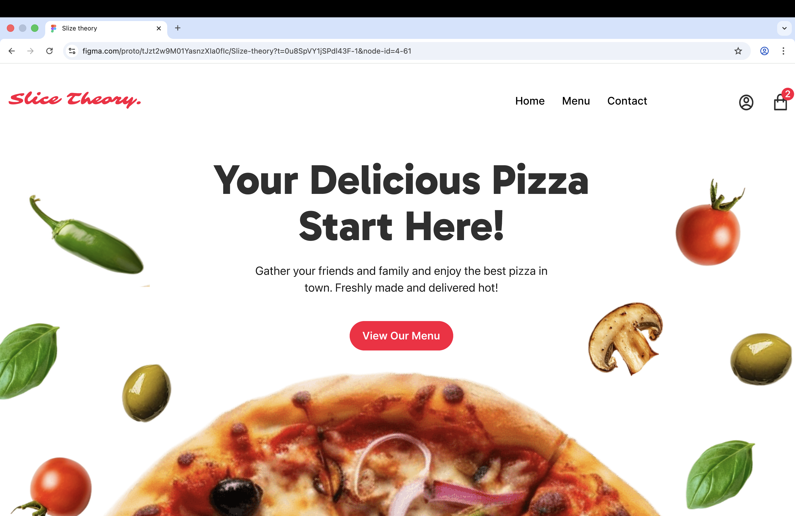
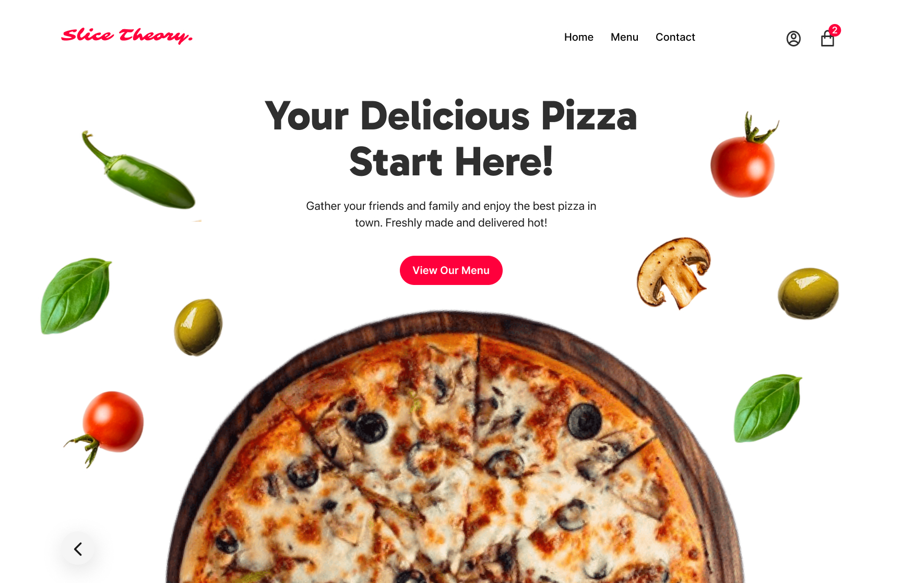

2026
Slice Theory
A high-fidelity pizza ordering website prototype designed to create an immersive, motion-driven experience for food enthusiasts.
2026
A high-fidelity pizza ordering website prototype designed to create an immersive, motion-driven experience for food enthusiasts.

Unlike traditional static menus, Slice Theory uses dynamic transitions. On clicking the side arrows, the interface rotates through different pizza varieties using smart-animate transitions to mimic a physical spinning tray.

To stimulate appetite and create a "fresh" feel, I used a high-contrast Tomato Red paired with clean White. This allows the vibrant colors of the pizza toppings and falling vegetables to stand out as the main focus.
Modern, clean, and highly readable for food ordering.
The experience begins with a dynamic entrance where ingredients drop from the bottom into the frame. Users then navigate the menu using side arrows, which triggers a rotating transition between different pizza varieties.

Step 1: Ingredient Entrance

Step 2: Interactive Pizza Slider